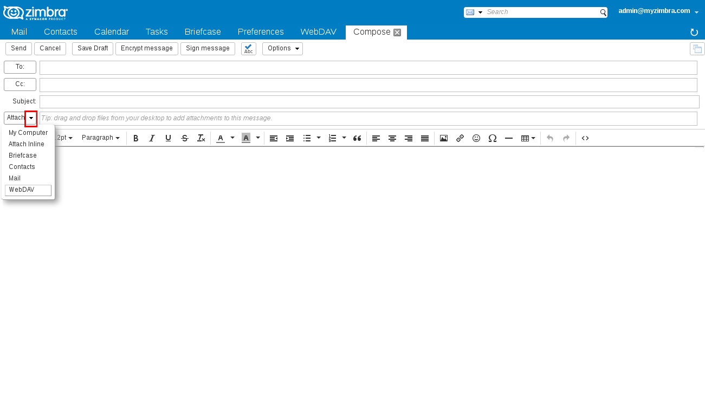
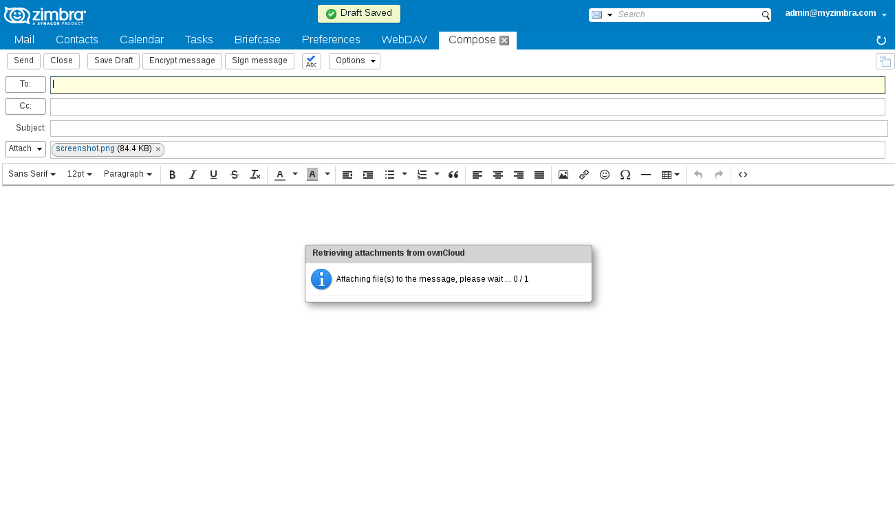
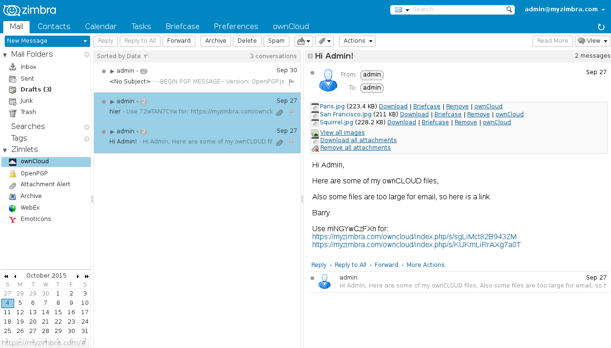
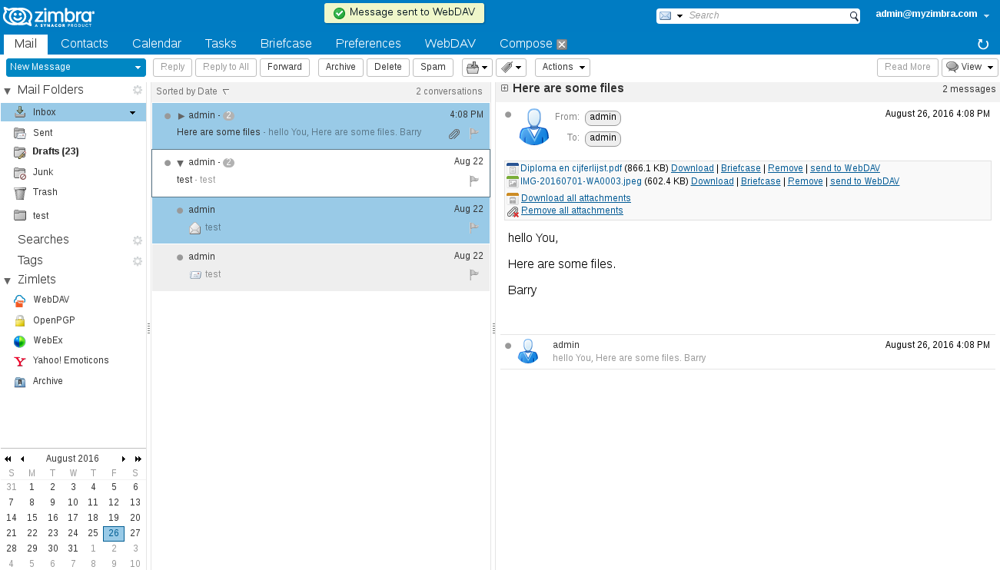
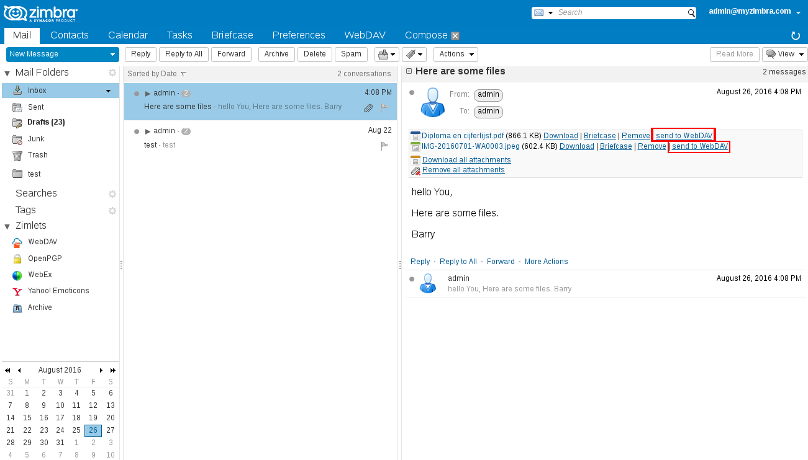
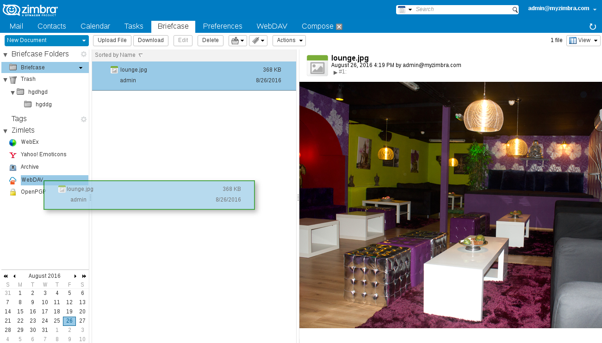
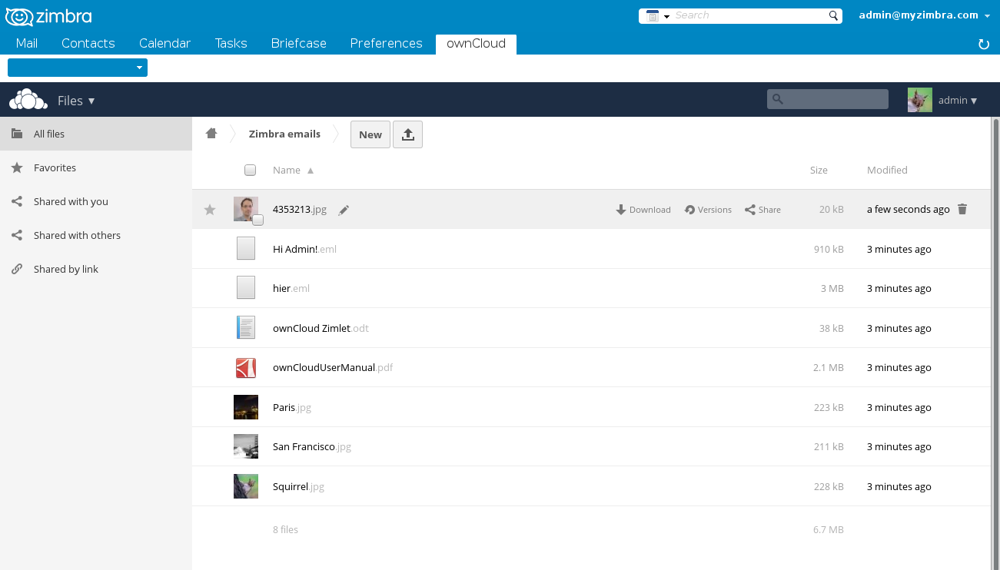

Zimbra WebDAV Client User Help
Contents
- Sending attachments from WebDAV
- Sharing files with a public link
- Saving emails to WebDAV
- Saving attachments to WebDAV
- Saving briefcase documents to WebDAV
- Configure WebDAV Client
- About Zimbra WebDAV Client
Sending attachments from WebDAV
When composing email in Zimbra, you can attach files from WebDAV directly. Click the arrow next to Attach.
You can select files by checking them, also you can open folders by clicking on the blue folder icons. Click Attach when done.

Attaching files may take some time, a dialog is displayed during this process. The message Draft Saved is displayed once your attachments are ready.

Saving emails to WebDAV
You can save emails including attachments to WebDAV by selecting them in your mailbox and drag and drop them on to the WebDAV panel.Tip: You can select multiple emails by using the CTRL or SHIFT keys on your keyboard.



You can see the resulting files on the WebDAV server in the folder that is defined in your preferences. You can open EML files using an email client, for example Mozilla Thunderbird, Windows Essentials Mail or Apple Mail.

Saving attachments to WebDAV
You can save a single attachment by clicking on the WebDAV link that is displayed after each attachment in your inbox. The attachment is saved to WebDAV in the folder that is defined in your preferences.
Saving briefcase documents to WebDAV
You can save briefcase documents to WebDAV by selecting them from your briefcase and drag and drop them on to the WebDAV panel.Tip: You can select multiple documents by using the CTRL or SHIFT keys on your keyboard.

You can find your document in WebDAV in the folder that is defined in your preferences.

Configure WebDAV Client
Find the WebDAV menu under Zimlets in your Zimbra web mail. Right click on WebDAV and select Preferences.
| Username | Your WebDAV username, is set to your Zimbra username by default |
| Password | Your WebDAV password |
| Store password1 | If checked, the password is stored in plain text in Zimbra LDAP. If not checked you have to provide password for each session |
| Default folder | Destination folder in WebDAV when saving emails, attachments and documents from Zimbra
The folder is automatically created when you click OK. |
1 Store password may have been disabled by your administrator.

The other fields should be automatically filled with correct details by your system administrator.
Zimbra WebDAV Client
If you find Zimbra WebDAV Client useful and want to support its continued development, you can make donations via:- PayPal: info@barrydegraaff.tk
- Bank transfer: IBAN NL55ABNA0623226413 ; BIC ABNANL2A